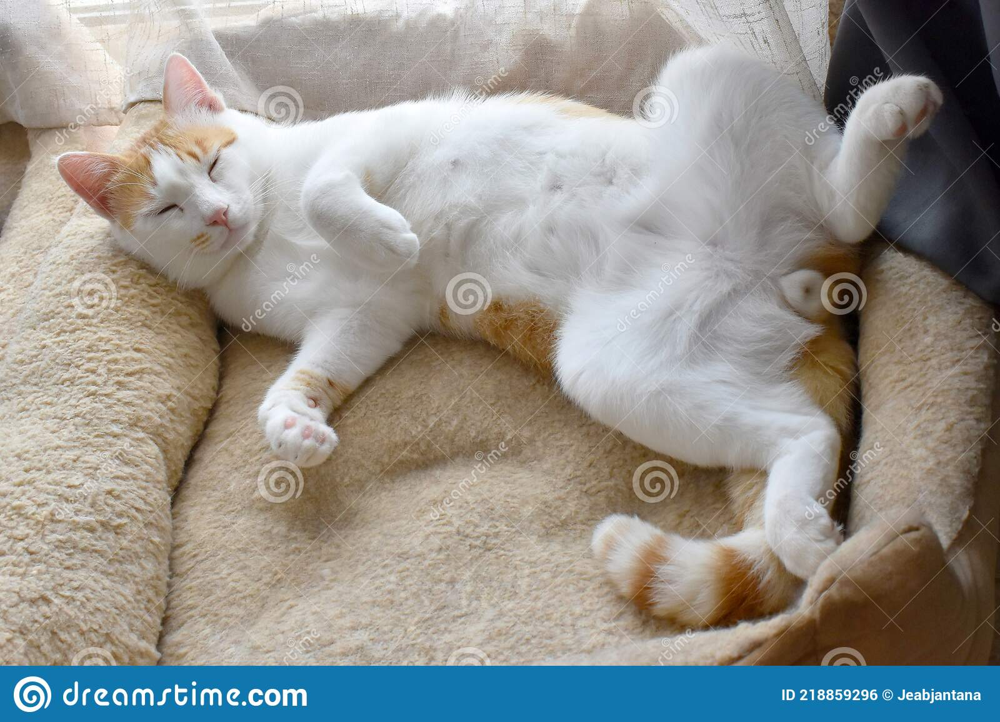

Ahora si hablando un poco enserio de los gatitos,
tienen varios datos que te pueden ayudar a comprenderlo y
tambien de conocerlo, alguno de esos datos son:
Tienen una flexibilidad y
agilidad impresionante, pueden saltar desde más de
3 metros de altura.
Los gatos pueden rotar sus orejas 180 grados.
Los gatos pueden pasar hasta 14 horas dormidos.

Debido a su naturaleza nocturna, los gatos suelen ser mucho más hiperactivos en la tarde.
La audición del gato promedio es al menos cinco veces más aguda que la de un adulto humano.
En la raza de gato más grande, el macho promedio pesa aproximadamente 9 kilos.
Los gatos domésticos pasan cerca del 70 por ciento del día durmiendo, y 15 por ciento del día acicalándose.
Un gato no puede ver directamente debajo de su nariz.
Tienen uno de los sistemas sensoriales más sofisticados del mundo.
La mayoría de los gatos no tiene pestañas.
Los gatos tienen cinco dedos en cada pata delantera, pero sólo cuatro en la parte posterior. Sin embargo, no es raro que los gatos tengan dedos extra. ¡El gato con la mayor cantidad de dedos conocidos tenía 32, ocho en cada pata!
Algunas personas creen que si sueñas con un gato blanco, te seguirá la buena suerte.
Los maullidos no son un lenguaje innato para gatos, ¡los desarrollaron para comunicarse con los humanos! Visita ¿Por qué lloran los gatos? para descubrir más sobre sus maullidos y sus significados.
Te dejo un video de algunos datos mas de los gatitos para que te puedas enamorar de ellos!